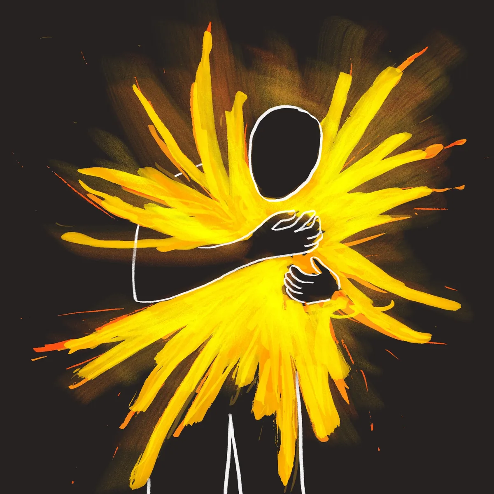

주제 말씀
"아빠 아버지여, 아버지께는 모든 것이 가능하오니
이 잔을 내게서 옮기시옵소서.
그러나 나의 원대로 마시옵고
아버지의 원대로 하옵소서."
마가복음 14:32–42 · 겟세마네 기도 (14:36)
P.R.A.Y.
- Patience
- Rely on
- Ask
- Yahweh
사흘의 기도
-
첫째 날 · 8월 7일 · 막 14:36
누구에게, 무엇을 기도하는가?
-
둘째 날 · 8월 14일 · 막 14:38–39
반복하나, 포기하지 않고 나아가는가?
-
셋째 날 · 8월 21일 · 막 14:32–42
함께 보는 결과가 과연 늘 선한가?
일정표
8월 7일 (금)
- 18:00식사 및 교제
- 20:001부 기도회
- 21:002부 기도회
- 22:00자유교제
8월 14일 (금)
- 18:00식사 및 교제
- 20:001부 기도회
- 21:002부 기도회
- 22:00자유교제
8월 21일 (금)
- 18:00식사 및 교제
- 20:001부 기도회
- 21:002부 기도회
- 22:00자유교제
8월 23일 (주일)
- 11:00글램핑 및 교제 · 무수아취 (오후 5시 30분까지)
포스터 갤러리

함께 만드는 사진첩
수련회의 순간들을 함께 담아요.
찍은 사진을 자유롭게 올려주세요.
교제 내용
수련회 교제 내용과 나눔 자료는
아래에서 확인할 수 있어요.